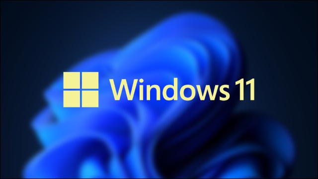
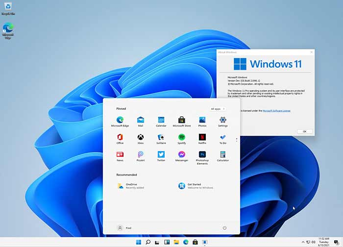

Windows 11

Wersja: 25H2 (najnowsza)
Data wydania: 5 Października 2021
Architektura: 64-bit (x64)
Windows 11 to najnowszy system operacyjny firmy Microsoft. Łączy nowoczesny wygląd z funkcjami poprawiającymi produktywność, bezpieczeństwo i integrację z nowym sprzętem.

Data wydania: 5 Października 2021
Architektura: 64-bit (x64)
Windows 11 to najnowszy system operacyjny firmy Microsoft. Łączy nowoczesny wygląd z funkcjami poprawiającymi produktywność, bezpieczeństwo i integrację z nowym sprzętem.
🔧 Wymagania sprzętowe
- Procesor: 1 GHz lub szybszy, co najmniej 2 rdzenie, zgodny z 64-bit i obsługą Secure Boot oraz TPM 2.0
- Pamięć RAM: minimum 4 GB
- Dysk: minimum 64 GB wolnego miejsca
- Karta graficzna: zgodna z DirectX 12 / WDDM 2.0
- Wyświetlacz: co najmniej 9", rozdzielczość HD (720p)
- TPM: Wersja 2.0 (moduł Trusted Platform Module)
💽 Instrukcja instalacji
- Pobierz plik ISO klikając przycisk poniżej.
- Przygotuj pendrive (minimum 8 GB) i program Rufus lub Media Creation Tool.
- Utwórz bootowalny pendrive z pliku ISO.
- Włóż pendrive do komputera i uruchom go ponownie.
- Wejdź do BIOS/UEFI (np. klawisz F2 lub DEL) i ustaw bootowanie z USB.
- Zapisz zmiany i uruchom ponownie komputer.
- Postępuj zgodnie z instrukcjami instalatora systemu Windows 11.